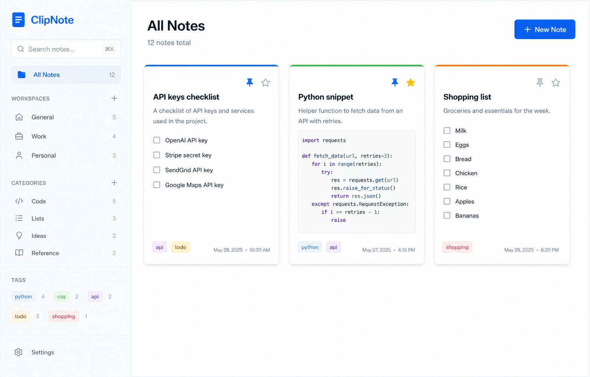
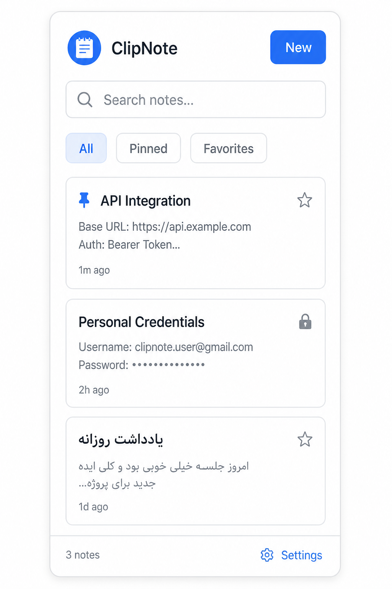
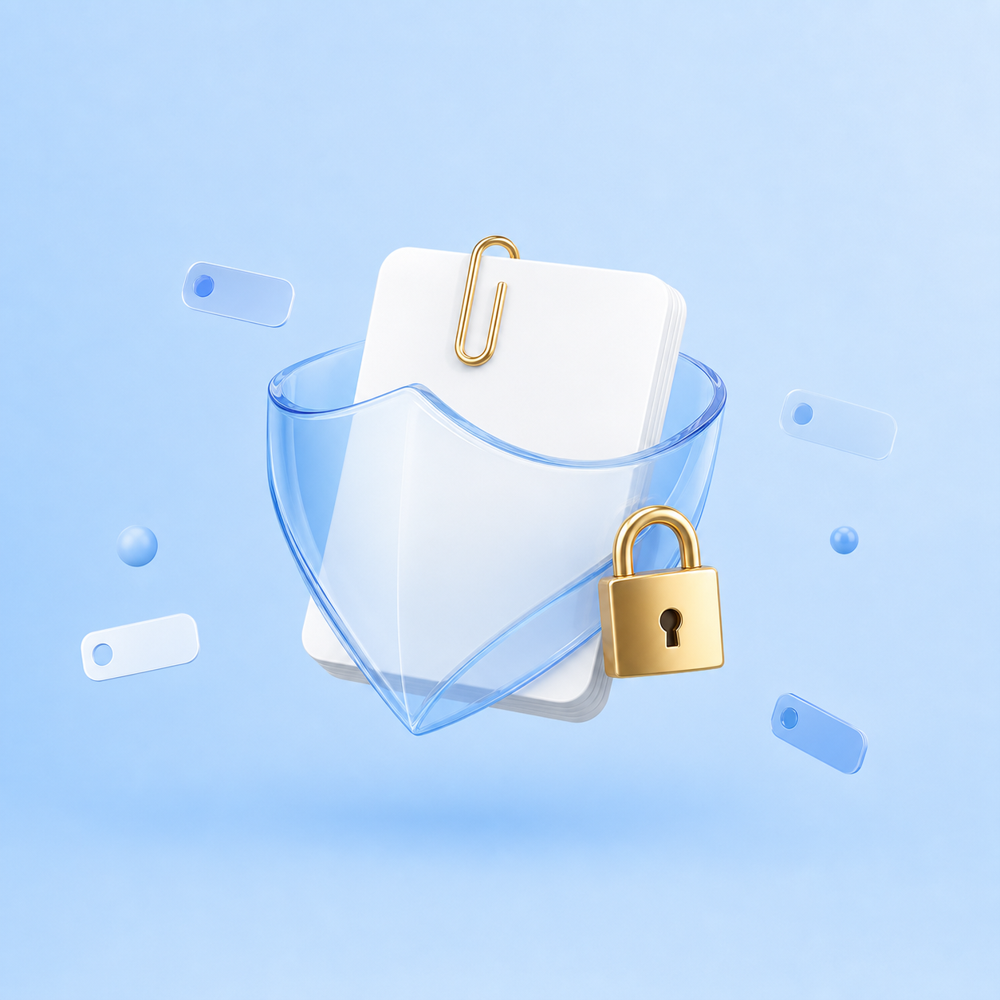

📋
Quick Save
Select text on any page, right-click, and send it to ClipNote with the page title and URL attached.
ClipNote captures ideas, code, passwords, and web selections in a fast bilingual notebook that never leaves your browser. Workspaces, Markdown, smart tags, and note locks — all offline.


A full notebook lives in the toolbar popup and a larger manager page — same data, same language, same privacy model.
Select text on any page, right-click, and send it to ClipNote with the page title and URL attached.
Split Work, Personal, and side projects. Filter notes by workspace, category, tag, pin, or favorite.
Python, CSS, Git, Docker, JSON, Markdown and more are suggested automatically as you type.
Headings, lists, tables, images, links, and copyable code blocks with split / editor / preview modes.
Protect a note with a password or 4-digit PIN. Optional recovery question. Secrets stay hashed locally.
Switch English or فارسی instantly. Persian uses Vazirmatn and a full RTL layout in popup and manager.
ClipNote is a Manifest V3 Chrome extension. Load it unpacked from the release zip — no store account required.
Get clipnote_1.3.0.zip from GitHub Releases and extract the clipnote_v1.3.0 folder.
In Chrome go to chrome://extensions and turn on Developer mode in the top-right corner.
Click Load unpacked and select the extracted folder that contains manifest.json.
Pin the icon, press Ctrl+Shift+N, and write your first note. Switch language in Settings.
The options page is a complete notebook: sidebar workspaces, timeline grouping, auto-save, undo, paste from clipboard, and theme controls.
They work in both the popup and the manager.
| Action | Windows / Linux | macOS |
|---|---|---|
| Open popup | Ctrl+Shift+N | ⌘+Shift+N |
| New note | Ctrl+N | ⌘+N |
| Save | Ctrl+S | ⌘+S |
| Search | Ctrl+F | ⌘+F |
Notes live in chrome.storage.local. There is no ClipNote server. GitHub is contacted only when you check for a newer version.
Passwords and PINs are stored as PBKDF2-SHA256 hashes with a random salt. Locked notes hide their preview until you unlock them in the current session.

No. Notes, tags, workspaces, and settings stay on this device. Update checks only read the public GitHub release API.
Yes. The interface language is a setting. Note titles and bodies use automatic direction, so mixed English and فارسی text stay readable.
Settings → Export JSON, then Import JSON on the other browser. TXT export is also available for a readable backup.